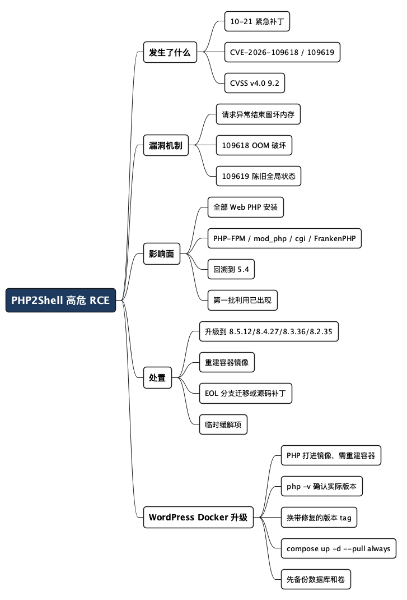

PHP2Shell 漏洞：PHP 紧急发布两个高危 RCE 补丁，今天就要动手
Posted on 四 22 10月 2026 in Tech
| Abstract | PHP2Shell：PHP 紧急发布两个高危 RCE 补丁 |
|---|---|
| Authors | Walter Fan |
| Category | Tech |
| Version | v1.0 |
| Updated | 2026-10-22 |
| License | CC-BY-NC-ND 4.0 |
大纲
展开看看
- 发生了什么：两个高危 RCE 漏洞，统称 PHP2Shell，10 月 21 日紧急补丁
- 严重在哪：CVSS v4.0 9.2，未认证、不走应用代码、影响几乎全部 PHP 版本
- 两个漏洞拆开看：CVE-2026-109618（OOM 破坏）与 CVE-2026-109619（陈旧全局状态）
- 影响面：哪些运行方式中招，哪个风险最高
- 处置清单：升级版本号 + 临时缓解配置 + 类部署里的坑
- WordPress 的 Docker 升级：为什么光换镜像不重建容器会漏，四步正确升级
- 一句话结论：没有完整的临时缓解，补丁是唯一彻底的办法
2026 年 10 月 21 日，PHP 官方给 8.5.12、8.4.27、8.3.36 和 8.2.35 打了紧急安全补丁，修复两个高危的远程代码执行（RCE）漏洞——统称 PHP2Shell，编号 CVE-2026-109618 和 CVE-2026-109619，CVSS v4.0 评分高达 9.2（Critical）。
看完漏洞说明，我先把最扎心的一句放在这儿：这俩漏洞能让攻击者不登录、不发任何内容给"你的应用"，直接靠一个 HTTP 请求在服务器上执行命令。 更麻烦的是，它不在某个插件或框架里，而在 PHP 内核本身——也就是说，跑 WordPress、Magento、Drupal、Laravel、Django 后面挂 PHP 的，全都跑不掉。
这篇文章先讲清楚漏洞的来龙去脉，再给一份今天就能动手的处置清单。用 Docker 跑 WordPress 的朋友注意了——因为 PHP 在镜像里更新不了，这里有个特别容易漏的点，我单独用了一节讲。读者如果是运维或者后端，建议先拉到清单和 WordPress 那两节干活，回头再补原理。
漏洞是什么
两个漏洞有个共同根源：PHP 在处理"异常结束的请求"时，会把内存留在一个损坏的、被释放过的状态里。正常情况下请求要么顺利跑完、要么干净退出；可一旦请求是因内存耗尽、致命错误、超时或客户端断连而中断，PHP 的清理逻辑就会读到坏数据，从而做出错误的分支——攻击者就是利用这一点。
看一下 CrowdStrike 和 PHP 官方的拆解：
| 编号 | 别名 | 机制 | 攻击方式 |
|---|---|---|---|
| CVE-2026-109618 | RCE via OOM corruption（内存耗尽破坏） | 请求被内存耗尽打断时，内部数据结构只初始化了一半，自己被标记成"已就绪"，清理时会读这段脏数据 | 单个请求自破坏→在同一个请求的清理阶段触发，快、原子、事后难还原 |
| CVE-2026-109619 | RCE via stale global state（陈旧全局状态） | 请求结束释放了内存，但某个全局状态还指向这段已 free 的区域，同一 worker 处理的下一个请求又读到它 | 跨请求两步走（先投毒、后触发），能被超时和断连触发，波及面更广 |
两个都属于 CWE-824（未初始化指针访问）。CVE-2026-109619 还能被用来读取进程内存，里面可能装着凭据、API 密钥之类的敏感数据。
发现它们的，是 Calif、OpenAI 和 Wiz 的安全研究人员。演示里，未认证攻击能在应用代码运行之前就把请求打穿到命令执行——所以 PHP 官方明确把 mod_php 列为风险最高的运行方式。
影响面有多大
按 PHP 官方和安全厂商的说法，影响范围几乎等于"所有为 Web 请求服务的 PHP 安装"，包括：
- PHP-FPM
- Apache 的 mod_php
- php-cgi
- FrankenPHP、LiteSpeed
而且不只 8.x 中招——可以追溯到 PHP 5.4 之后的所有版本。CVE-2026-109618 的触发链路，甚至能一路回溯到 5.4 时代的 session 上传进度机制。
10 月 21 日补丁放出后，安全监控已经观察到第一批利用尝试在撞传感器。这意味着这不是"等别人先打补丁、我们随后跟上"的节奏，而是"今天就得排上"。
各版本该升到哪
| PHP 分支 | 状态 | 该升到的版本 |
|---|---|---|
| PHP 8.5 | 活跃支持 | 8.5.12 |
| PHP 8.4 | 活跃支持 | 8.4.27 |
| PHP 8.3 | 活跃支持 | 8.3.36 |
| PHP 8.2 | 仅安全支持 | 8.2.35 |
| PHP 8.1 及更早 | 已到生命周期终点（EOL） | 官方不再给补丁；看发行版/LTS 厂商的移植，或升级到受支持分支 |
| PHP 7.4 / 8.0 / 8.1 | EOL | 官方给了最小源码级移植补丁，供自己编译或没有 LTS 厂商的环境 |
处置清单
PHP 官方反复强调一句：没有完整的临时缓解方案，升级补丁是唯一彻底的办法。 下面是官方给出的、能"降低部分攻击面"的临时措施——它们不能让系统变安全，只是在你明天还补不上的时候，先压一压暴露面。
- 优先给所有生产 PHP 打补丁，尤其是暴露公网的机器。升级版本见上表。
-
注意：只改应用代码、上 WAF、装网站安全插件都不够——漏洞在内核/运行时层面，应用外的那层防护拦不住。
-
重建并重新部署容器镜像。 如果 PHP 是打进镜像里的，光更新宿主机不会更新镜像内部的 PHP，必须重建基础镜像再部署。
-
处理 EOL 分支。 还在跑 PHP 8.1 或更老、又没有 LTS 厂商兜底的，要么马上迁移到受支持版本，要么自己按官方最小源码补丁重新编译。
-
临时缓解项（补丁之前用，按需开）：
- CVE-2026-109618：设置
memory_limit=-1（最好用 FPM pool 或 Apache 里应用没法覆盖的方式，比如php_admin_value），并检查有没有某个 pool、目录或应用设置又把它改回有限值；对不需要文件上传的应用把post_max_size设低（比如 8M，需要上传的设 32M）；再用容器/cgroup 限制做可用性边界，最好配成"只杀受影响的那个 worker"。 -
CVE-2026-109619：设
session.upload_progress.enabled=0并重启每个 worker；PHP 8.5 上再设fatal_error_backtraces=0并重启 worker（只拦得住已确认的 fatal backtrace 路径）；修掉攻击者可触发的致命错误和超时（包括回调、上传/导入处理及其清理阶段）；用error_reporting、display_errors或@藏报错没有用。 -
留意发行版/K8s 生态的坑。 官方提醒，如果依赖社区维护的
rpms.remirepo.net，建议切换到发行版自带包或自己编译，以便立刻应用更新。
一句话：先把能升的都升了，升不了的有上面这些应急项压着，但心里要清楚——只有补丁是完整的修复。
WordPress 的 Docker 容器怎么升级
如果站是这么跑的——PHP 打进镜像里，wordpress 官方镜像 + 一个 MySQL 容器，代码和数据都在卷里——那这次的升级有个特别要紧的点，很多初次接触的人会栽：光 docker pull 新镜像没用，得重建容器。
原因很简单：PHP 是跟着镜像走的，不是跟着你的 WordPress 代码走的。更新宿主机上的 PHP 不会更新镜像里的 PHP；同样的，你在容器里跑 wp update 或者让 WordPress 自动更新，更新的是 WordPress 源码和插件——碰不到内核里那个 PHP。所以 PHP2Shell 的修复，必须靠"换一个新镜像 + 重建容器"来完成。
好在数据不丢：/var/www/html 和数据库都挂在卷上，重建容器不会碰你的文章、主题和数据库。具体操作是这样：
- 确认当前镜像里的 PHP 版本。 别用"好像是最新的"这种判断，先进容器里实打实看：
bash
docker exec <容器名> php -v
这一步很关键。官方镜像的 tag 里带 PHP 版本，比如 wordpress:php8.3-apache、wordpress:php8.4-fpm。你要确认的是实际跑的 PHP 是否已经到了修复版——对 8.3 系就是 8.3.36，8.4 系是 8.4.27，8.5 系是 8.5.12。如果 tag 没跟着升，容器里很可能还是个带洞的旧版本。
- 把镜像 tag 指向带修复的版本，重新拉取。 官方镜像通常用
php8.3、php8.4、php8.5这类按 PHP 大版本分的 tag，官方会在后台把这些 tag 推到含修复的小版本。所以：
bash
docker pull wordpress:php8.4-apache
注意别用没有版本约束的 latest 当生产依据——latest 指向哪个 PHP 大版本是官方定的，你没法保证。明确锁定到你需要的 PHP 版本 tag，至少能自己掌握升的是哪一个。
- 重建容器（不是重启）。
docker restart不会换镜像，必须用新镜像重建：
bash
docker compose up -d --pull always wordpress
或者不写 compose、手动跑时，用 docker rm -f 删掉旧容器，再用新 tag docker run 起一个，卷保持不变。
- 重建后再验一遍。 回到第 1 步，再跑
php -v，确认容器里确实已经是修复版，再切流量/恢复。
如果你不是直接用官方镜像，而是 FROM wordpress:... 自己叠的层（加了插件、php 扩展之类），那就得改 Dockerfile 里的基础镜像 tag，重新 docker build 再部署——只拉不带自己改动的官方镜像，盖不掉你叠的那些东西。
最后补一句操作纪律：操作前先备份数据库和卷，这是所有版本升级的地基。PHP2Shell 再急，也就快那么几分钟，但一次没备份的升级翻车，后悔的时间可长得多。
- 漏洞编号与补丁版本以 PHP 官方 2026-10-21 公告、CrowdStrike 与微软 Azure 的披露为准；
session.upload_progress.enabled这类路径来自已公开的技术分析，实际利用细节已由官方处置，这里不展开攻击载荷。 - 文中"第一批利用尝试"来自安全厂商 10 月 21 日的观测，属于公开报道口径。
全文思维导图
@startmindmap
<style>
mindmapDiagram {
node {
BackgroundColor #F8F9FA
RoundCorner 10
Padding 10
FontSize 13
}
:depth(0) {
BackgroundColor #1E3A5F
FontColor white
FontSize 18
FontStyle bold
}
:depth(1) {
FontSize 15
FontStyle bold
}
:depth(2) {
FontSize 13
}
}
</style>
* PHP2Shell 高危 RCE
** 发生了什么
*** 10-21 紧急补丁
*** CVE-2026-109618 / 109619
*** CVSS v4.0 9.2
** 漏洞机制
*** 请求异常结束留坏内存
*** 109618 OOM 破坏
*** 109619 陈旧全局状态
** 影响面
*** 全部 Web PHP 安装
*** PHP-FPM / mod_php / cgi / FrankenPHP
*** 回溯到 5.4
*** 第一批利用已出现
** 处置
*** 升级到 8.5.12/8.4.27/8.3.36/8.2.35
*** 重建容器镜像
*** EOL 分支迁移或源码补丁
*** 临时缓解项
** WordPress Docker 升级
*** PHP 打进镜像，需重建容器
*** php -v 确认实际版本
*** 换带修复的版本 tag
*** compose up -d --pull always
*** 先备份数据库和卷
@endmindmap

本作品采用知识共享署名-非商业性使用-禁止演绎 4.0 国际许可协议进行许可。 欢迎在我的个人网站 https://www.fanyamin.com 访问原文并评论。